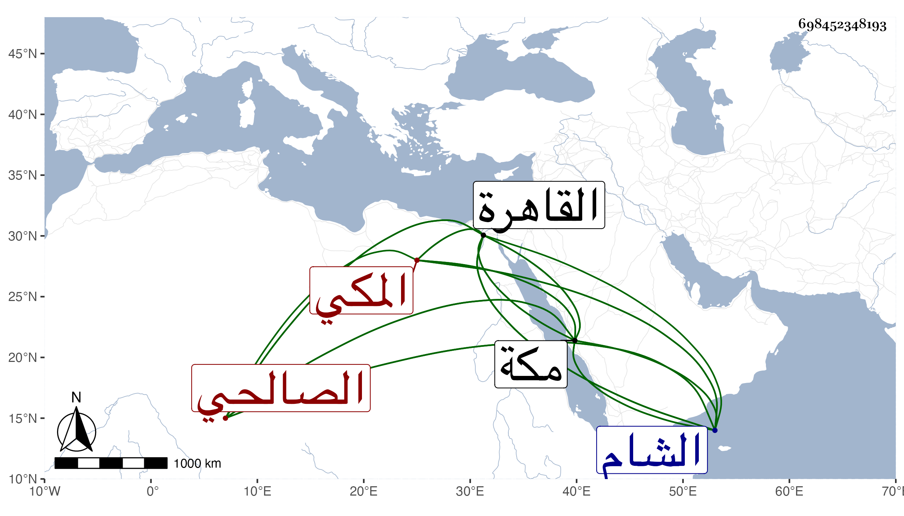

0902Sakhawi.DawLamic.ITO20230111-ara1.EIS1600.698452348193
Biography ID: 698452348193
53
محمد بن علي بن محمد بن عثمان بن إسماعيل الشمس أبو المعالي الصالحي الأصل المكي . ولد في ذي القعدة سنة تسع وستين وسبعمائة بمكة وأحضر بها في الثانية علي الجمال بن عبد المعطي بعض ابن حبان وسمع بها من أحمد بن سالم المؤذن والقروي وابن صديق وغيرهم ودخل القاهرة والشام غير مرة فسمع من التنوخي والبلقيني والعراقي والهيثمي وغيرهم بالقاهرة ومن أبي هريرة بن الذهبي والشهاب أحمد ابن أبي بكر بن العز وإبراهيم بن أحمد بن عبد الهادي وآخرين بالشام ، وأجاز له النشاوري والأميوطي والكمال بن حبيب وأخوه البدر والبهاء السبكي وخلق ، وحدث سمع منه النجم بن فهد والبرهان بن ظهيرة وآخرون . مات بمكة في جمادي الأخرة سنة ست وأربعين رحمه الله .
